Highlights
- Removing gravity eliminates buoyant plumes, reducing leaf boundary-layer conductance $g_{bl}$ by 2.0–2.3×.
- Forced airflow reverses microgravity boundary-layer resistance (2.0 cm/s for leaf, 6.1 cm/s for rosette).
- Illuminated sealed canisters exhaust headspace CO2 within ~7 minutes, cutting 12-h carbon gain to ~1%.
- Canister CO2 starvation shifts Rubisco oxygenation from 18% to 46% (22× larger than microgravity).
- NASA OSDR multi-omics confirms severe carbon starvation; illumination separates all 6 spaceflight contrasts ($p=0.05$).
Graphical Abstract
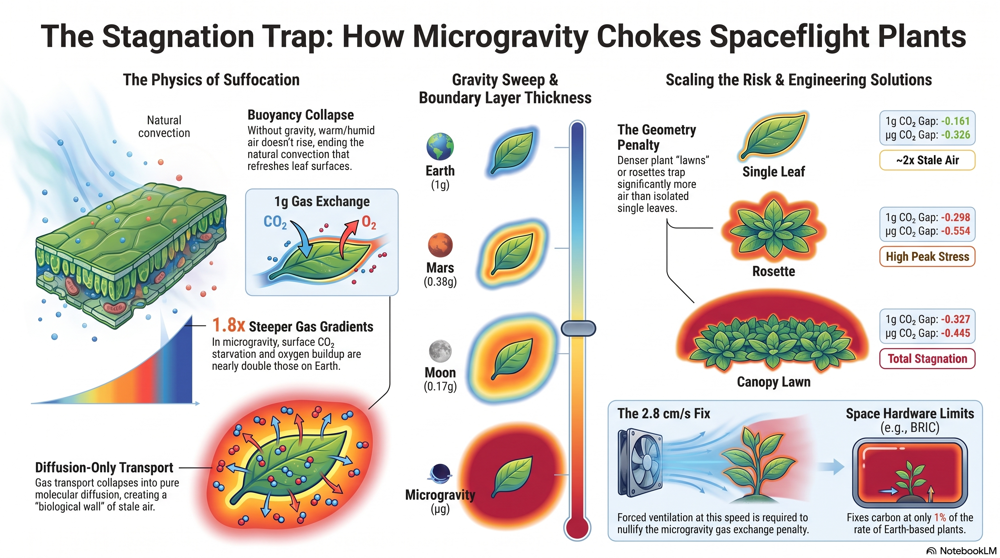
01Overview & Central Thesis
Two distinct gas-transport mechanisms have been proposed to explain spaceflight plant stress signatures: (1) the microgravity loss of buoyancy-driven natural convection, which thickens the sub-millimetre diffusive boundary layer around leaves (Ca → Cs), and (2) atmospheric drawdown inside sealed or poorly ventilated growth hardware (Ccabin → Ca). Because no flight experiment has resolved sub-millimetre leaf boundary layers or logged in-canister CO2 across hardware classes, we coupled a validated 2-D lattice-Boltzmann CFD solver to an FvCB C3 model and tested its directional predictions against NASA Open Science Data Repository (OSDR) multi-omics datasets.
We show that while microgravity genuinely reduces boundary-layer conductance gbl by 2.0–2.3× across leaf, rosette, and canopy geometries, an illuminated sealed BRIC canister exhausts its headspace CO2 to the compensation point within ~7 minutes, slashing 12-h carbon gain to ~1% of an unenclosed control and raising Rubisco oxygenation (φ = Vo/(Vo+Vc)) from 18.0% to 46.2%—an enclosure effect 22× larger than the microgravity boundary-layer effect that occurs equally in flight and ground controls and causes the 1g and µg boundary layers to converge as net assimilation approaches zero.
02Key Quantitative Findings
03Part I — Lattice-Boltzmann Solver Verification & Empirical Gas-Exchange Anchor
Before simulating biological geometries, the D2Q9 incompressible-flow and three-species (CO2/O2/H2O)
D2Q5 advection–diffusion solver (src/solver/lbm/) passed four independent numerical benchmarks
(validation/gates.ts) and was anchored to empirical Arabidopsis thaliana Col-0 whole-chamber
gas exchange (A = 3.85 µmol m⁻² s⁻¹, Rd = 1.18 µmol m⁻² s⁻¹; Chew et al., 2022).
| Gate | Benchmark Problem | Reference Solution | LBM (BGK / MRT) |
|---|---|---|---|
| 1 | Lid-driven square cavity (Re = 100) | Ghia et al. (1982) centreline (L2 < 0.05) | L2 = 0.0105 / 0.0115 ✓ |
| 2 | Cylinder wake (Re = 100, blockage 0.17) | Kármán vortex shedding (St ≈ 0.19–0.20) | St = 0.192 / 0.200 ✓ |
| 3 | Natural convection cavity (Ra = 10⁴, Pr = 0.71) | de Vahl Davis (1983), Nu = 2.238 | Nu = 2.242 (0.18%) / 2.248 ✓ |
| 4 | Pure 1-D step diffusion | ½·erfc(x/√4Dt) analytic | L2 < 10⁻⁴ ✓ |
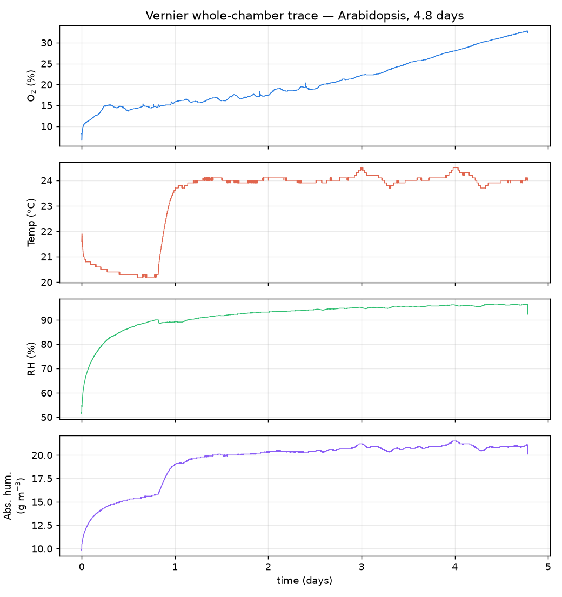
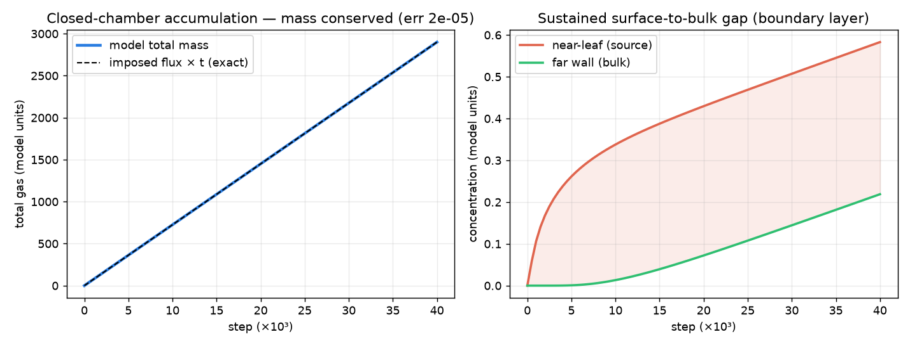
04Part II — Gravity, Plant Architecture & Forced Ventilation
Across 150,000-step (26 s; 900,000-step / 156 s for µg canopy) steady-state simulations verified to 0.00%
drift over the final 5 s (T15_stationarity.csv) and 0.87–3.16% fine-grid convergence index
(T16_resolution_gci.csv), reducing gravity from Earth (1g) through Mars (0.38g) and
Moon (0.17g) to microgravity (0g) collapses convective velocity as umax ∝ √g → 0
and thickens the diffusive boundary layer δ = DCO2/gbl from 0.67 to 1.50 mm on a single
leaf, 1.23 to 2.45 mm on a rosette, and 5.02 to 11.42 mm in a dense microgreen canopy (T2, T5, T13).
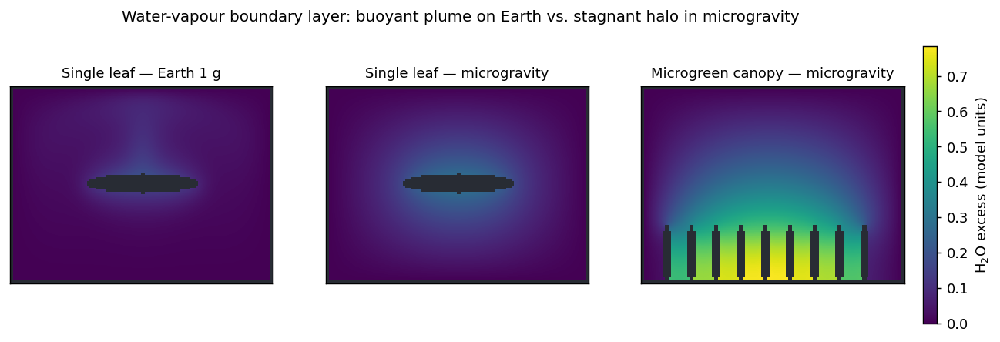
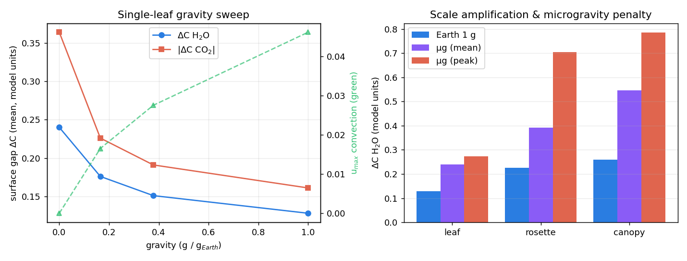
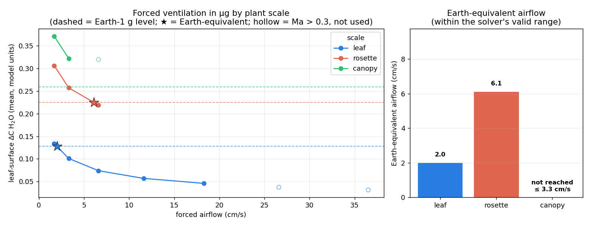
05Part III — Spaceflight Hardware Mass Balance & Coupled FvCB Rubisco Kinetics
Coupling the CFD boundary-layer conductances and 0-D hardware headspace mass balances (BRIC sealed, CARA micropore-taped, VEGGIE ventilated) to an FvCB C3 biochemical model reveals why hardware dominates the metabolic baseline: in an illuminated sealed BRIC canister (30 mL headspace, 3 cm² leaf area), photosynthesis draws headspace CO2 down to the compensation point (Γ ≈ 50 ppm) within ~7 minutes, collapsing 12-h carbon gain to 1% of an unenclosed Earth control (vs 90% in CARA and 100% in VEGGIE) and driving Rubisco oxygenation φ from 18.0% to 46.2% at 60 µmol m⁻² s⁻¹. Because canister drawdown is a mass balance, it occurs symmetrically in both flight and ground controls and causes the 1g and µg boundary layers to converge as A → 0.
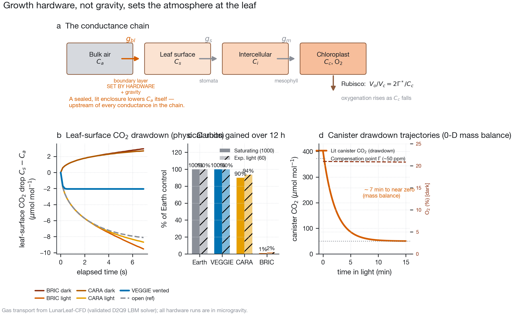
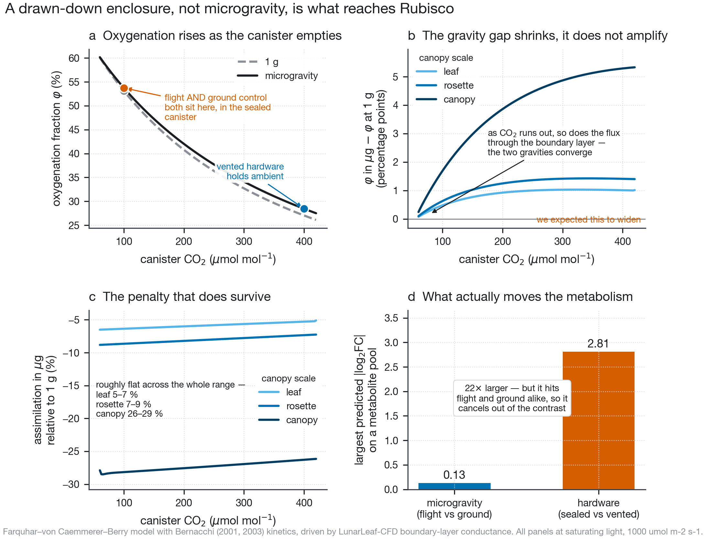
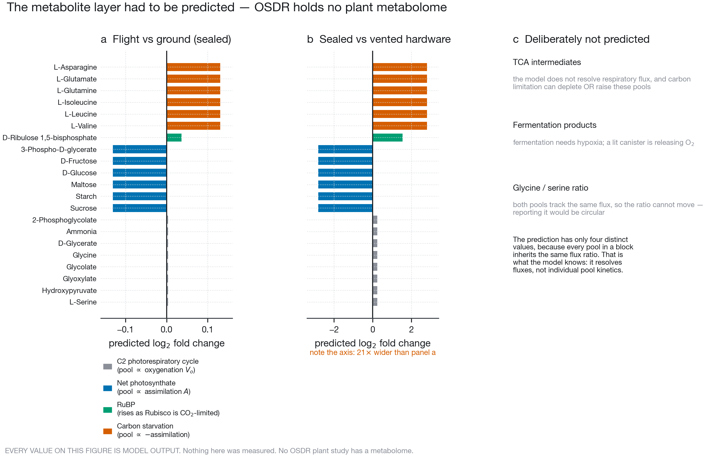
06Part IV — Multi-Omics Falsification in OSD-522 & Across Five NASA OSDR Studies
Testing the coupled model against OSD-522 (BRIC-LED) shoot RNA-seq (19,325 loci, 1,795 DEGs) and TMT proteomics
(5,160 proteins) confirmed 8 of 9 directional calls in the transcriptome and 4 of 7 in
the proteome: repression of photosystems, Rubisco, carbon fixation, and starch/sucrose metabolism;
strong induction of DIN6/ASN1 carbon-starvation markers (+0.685, p = 2.6×10⁻³); and selective
maintenance of core photorespiratory enzymes above Rubisco (+0.239 transcriptome, p = 6.8×10⁻³; +0.285
proteome, p = 0.049). In PaintOmics 4 across 232 KEGG and MapMan pathways, ER unfolded protein response
(ath04141, p = 8.6×10⁻⁹) dominated globally while photorespiration ranked 214th of 232
(bottom 8%). Across six matched flight-versus-ground contrasts from five OSDR studies, illumination separated
every lit study from every dark study on carbon starvation over photosynthesis (p = 0.05).
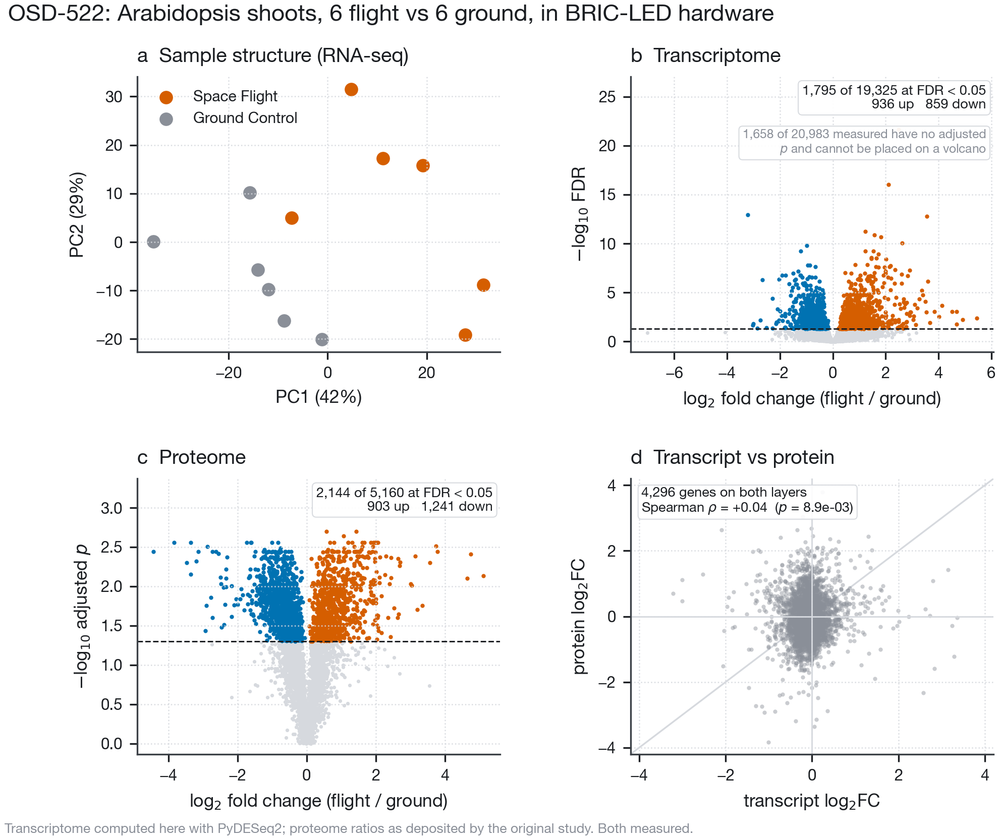
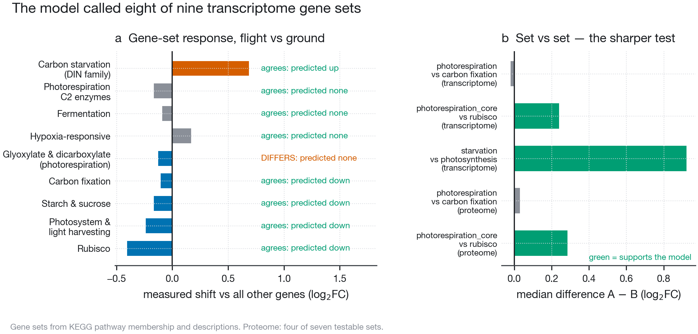
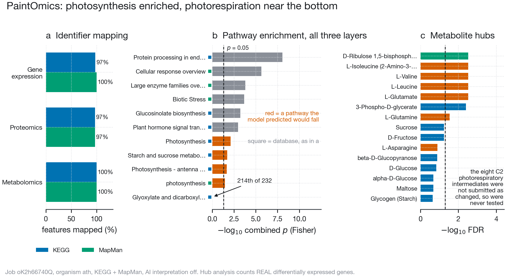
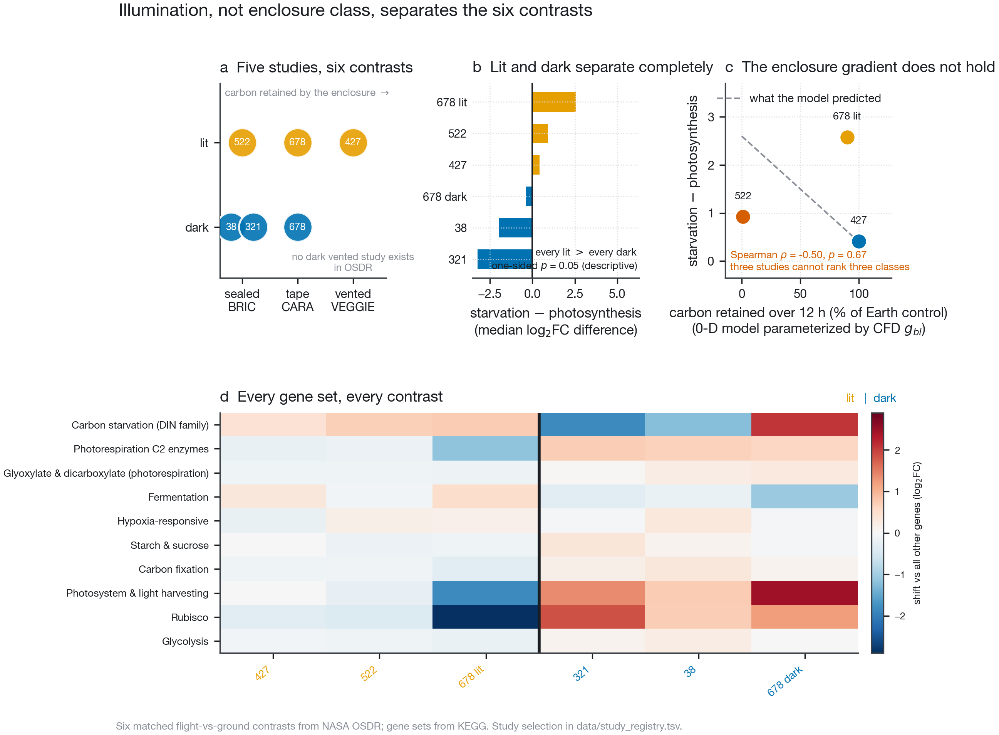
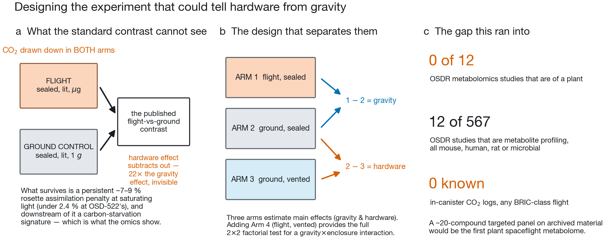
07Read, Run & Reuse (FAIR Package)
elsarticle preprint for Prog. Biophys. Mol. Biol.
📑 Supplementary PDFSupplementary Tables S1–S10 & Supplementary Figures S1–S8.
📝 Manuscript (Word .docx)Editable Word version of the integrated manuscript.
💻 GitHub & Zenodo ArchiveMIT code, CC-BY-4.0 data/figures, 45 verified tables in MANIFEST.tsv.
08Citation
github.com/dr-richard-barker/Spaceflight-Plant-Biophysics-Multiomics — see CITATION.cff and .zenodo.json.